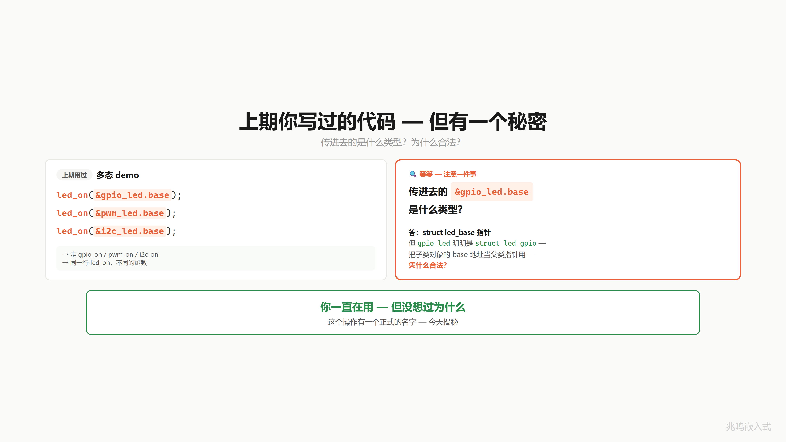
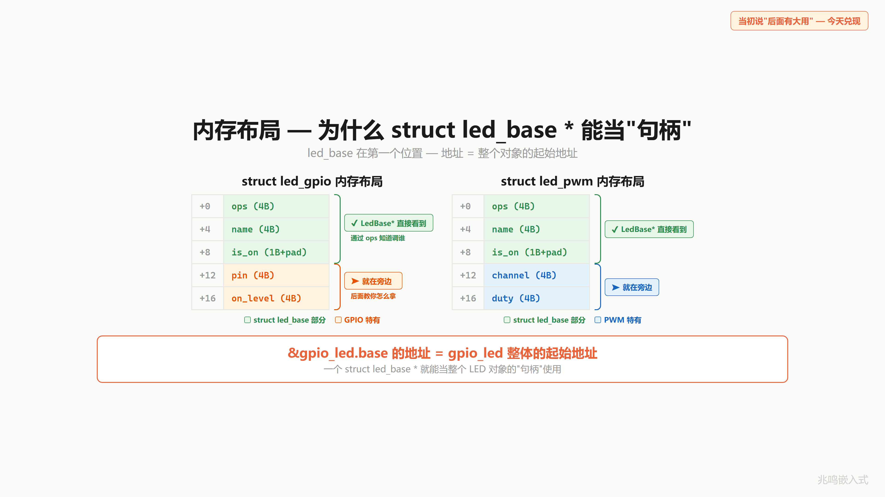
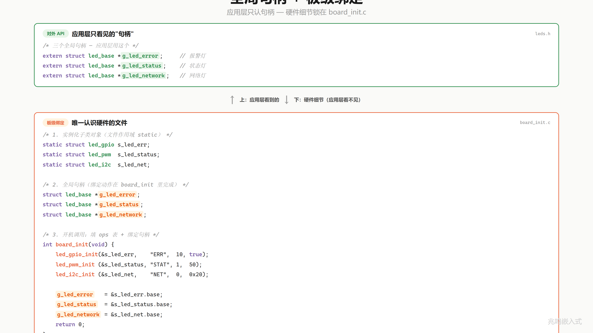
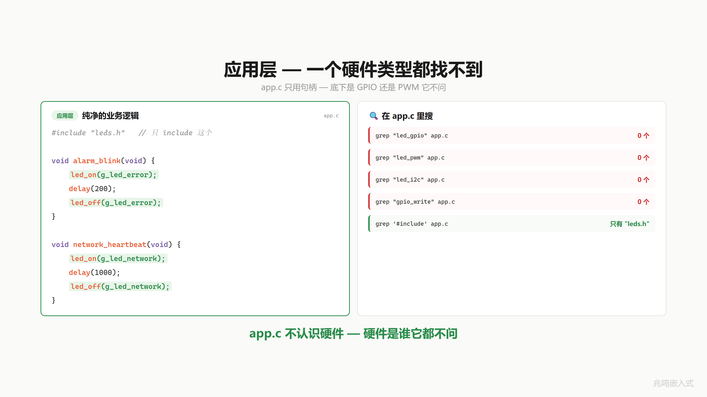
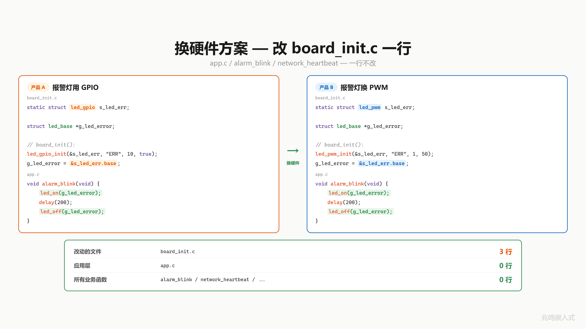
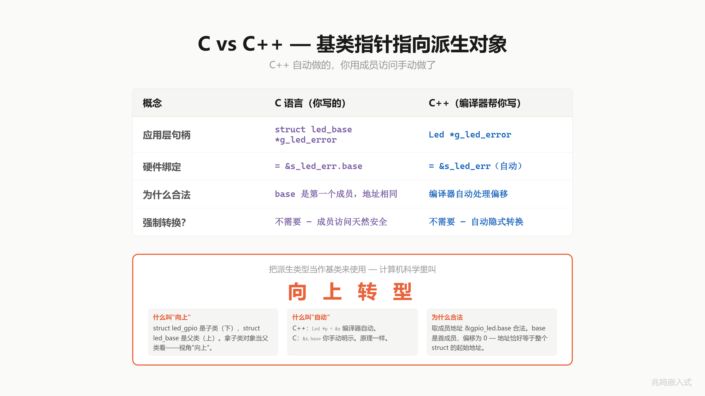

第 12 章 · 一个指针指所有 LED · 向上转型
配套代码：oop-in-c/code/12-upcasting/
12.1 上一章的代码里藏着一个秘密
本章配套代码相对第 11 章给 led_gpio 加了一个 on_level 字段（第四个参数 true 表示高电平点亮，低电平点亮就传 false），子类构造签名跟着多了一个参数。这个改动 § 12.8.7 会展开，先记住第四个参数是干什么的。
第 11 章末尾你写过这样的调用（已经是 ch12 形态）：
struct led_gpio gpio_led;
led_gpio_init(&gpio_led, "ERR", 10, true);
led_on(&gpio_led.base); /* 调过去 */
led_off(&gpio_led.base);
注意这一行 &gpio_led.base。
led_on 的参数类型是 struct led_base *。gpio_led 的类型是 struct led_gpio。你把一个 led_gpio 对象的 base 字段地址，当成 led_base * 传了进去。
C 编译器一句话不说就让你过了。这个你一直在用但没仔细想过的事，今天揭穿。

12.2 内存布局里的不变量
第 11 章演化出了这个布局（slide 上写作 LedGpio / LedBase，本书用 Linux 内核风格的 struct led_gpio / struct led_base，含义一致）：
struct led_gpio {
struct led_base base; /* 父类，必须在第一个位置 */
uint8_t pin;
bool on_level;
};
把它在内存里画出来：
+---------+---------+---------+ <- &gpio_led
| ops* | name* | is_on | base 部分
+---------+---------+---------+
| pin | on_lvl | (pad) | gpio 自己的部分
+---------+---------+---------+
base 是子类的第一个字段，位于偏移 0。
C 标准（C99 6.7.2.1 节）保证了一件事：结构体第一个成员的地址，等于结构体本身的地址。也就是说：
&gpio_led == &gpio_led.base (作为指针值)
sizeof(struct led_gpio) > sizeof(struct led_base) (但加大不影响起始地址)
&gpio_led.base 拿到的那个数值，就是 gpio_led 整个对象的起始地址。

这一条不变量，是这一章所有威力的根基。
12.3 父类指针是通用句柄
有了这个不变量，就有了一个事实：
一个
struct led_base *指针，拿到&gpio_led.base之后，它实际上握着整个gpio_led对象。
它不是只能看见 base 部分。它握着整个对象。需要的时候（gpio_on 内部要用 pin 字段），可以从 base 反推回去。这一步在第 13 章会展开，本章先承认它能做到。
把这个事实推到极致：
struct led_base *是任何 LED 对象的通用句柄。
led_gpio、led_pwm、led_i2c 三种子类，背后挂的子类对象不同，对外暴露的都是同一个 struct led_base * 类型。应用层只看到这个类型，不知道也不需要知道背后是哪一个子类。
12.4 全局句柄 + 板级初始化
把这个事实变成项目结构。
新建一个头文件 leds.h，里面只声明全局句柄：
/* leds.h */
#include "led.h"
extern struct led_base *g_led_error;
extern struct led_base *g_led_status;
extern struct led_base *g_led_network;
void board_init(void);
应用层只 include 这一个文件。看到的是三个 struct led_base *，看不到任何子类类型。
具体硬件呢？锁在另一个文件 board_init.c：
/* board_init.c */
#include "leds.h"
static struct led_gpio s_led_err; /* 文件作用域，外部不可见 */
static struct led_pwm s_led_status;
static struct led_i2c s_led_net;
struct led_base *g_led_error; /* 句柄定义 */
struct led_base *g_led_status;
struct led_base *g_led_network;
int board_init(void)
{
int rc;
rc = led_gpio_init(&s_led_err, "ERR", 10, true);
if (rc != 0) return rc;
rc = led_pwm_init (&s_led_status, "STAT", 1, 50);
if (rc != 0) return rc;
rc = led_i2c_init (&s_led_net, "NET", 0, 0x20);
if (rc != 0) return rc;
g_led_error = &s_led_err.base;
g_led_status = &s_led_status.base;
g_led_network = &s_led_net.base;
return 0;
}
三步：实例化子类对象、跑子类构造函数、把 &xxx.base 赋给全局句柄。子类 init 返回 int 错误码，board_init 把任何一颗 LED 的初始化失败原样上抛给 main，板级出问题立刻暴露。
最后这三行是这一章的核心。它把 s_led_err 这个 struct led_gpio 对象，“当作” struct led_base * 句柄在用。子类对象当父类指针看，就是向上转型。

board_init 在 main 里开机调一次。这一招在嵌入式叫板级初始化（Board Support Package 的核心）。每个项目一份 board_init.c，配置不同板子上 LED 接的是 GPIO 还是 PWM 还是 I2C 扩展芯片。
12.5 应用层零硬件字样
来看应用层 main.c：
#include "leds.h"
static void alarm_blink(void)
{
led_on(g_led_error);
led_off(g_led_error);
}
static void network_heartbeat(void)
{
led_on(g_led_network);
led_off(g_led_network);
}
打开终端：
grep -n "led_gpio\|led_pwm\|led_i2c" main.c # 0 行
grep -n "gpio_write\|gpio_init" main.c # 0 行
grep -n "pwm_\|i2c_\|0x20" main.c # 0 行
应用层一个硬件字样都没有。它不认识 GPIO、不认识 PWM、不认识 I2C。它只用句柄。

应用层不认识硬件，硬件是谁它都不问。
12.6 换硬件改一行
老板说：报警灯要能调光，从 GPIO 换成 PWM。
打开 board_init.c，改一行。
/* 改前 */
static struct led_gpio s_led_err;
led_gpio_init(&s_led_err, "ERR", 10, true);
g_led_error = &s_led_err.base;
/* 改后 */
static struct led_pwm s_led_err;
led_pwm_init(&s_led_err, "ERR", 2, 80);
g_led_error = &s_led_err.base;
实际上是三行（实例化、init、绑定），都在同一个文件里，一处改完。
main.c 呢？打开 grep。alarm_blink、network_heartbeat、所有业务函数：0 行改动。

改 1 行，换一整套硬件。这就是向上转型的工程化威力。应用层和硬件之间隔着一个 struct led_base * 句柄，硬件那头怎么换，句柄这头一律不知道。
12.7 这个东西叫什么
你刚才做的事，软件工程里有个名字。
把派生类（struct led_gpio）的对象，当作基类（struct led_base）来引用、调用、传递，这叫 向上转型（upcasting）。
在 C++ 里这一步是隐式的：
class LedBase { /* ... */ };
class LedGpio : public LedBase { /* ... */ };
LedGpio gpio_led;
LedBase &handle = gpio_led; /* 编译器自动认 */
LedBase *p = &gpio_led; /* 编译器自动认 */
C++ 编译器看见 LedGpio 继承自 LedBase，不需要任何转换语法，就让基类引用 / 指针绑到派生对象上。
C 里你手动写 &gpio_led.base，做的是同一件事：拿到子类内嵌的父类那一段的地址。底层机器码完全一致，都是“把 gpio_led 这个对象的起始地址，按 LedBase * 类型解读“。

12.8 视频里没讲透的几个细节
12.8.1 为什么 base 必须在第一个位置
C99 标准 6.7.2.1 节第 13 段保证：“结构体的第一个成员的地址等于结构体本身的地址”。后面成员的地址不保证（编译器可以为对齐插 padding）。
所以 &gpio_led == &gpio_led.base 这一条只在 base 是第一个成员时成立。如果有一天某个倒霉的同事把 base 移到第二个，下面这种写法就错：
g_led_error = (struct led_base *)&s_led_err; /* 危险，base 必须在第一个位置 */
它把 s_led_err 的起始地址直接当 led_base * 用。base 一旦不在第一个，地址就偏了，运行时崩。
本书一律不用这种强转。书里用 &s_led_err.base，把“取出哪个成员“显式写出来。base 不管在第几个位置，都对。让编译器自己算偏移，你别去碰。
12.8.2 名字 base 是约定，不是关键字
C 没有继承关键字，base 这个字段名是社区约定。Linux 内核里你会看到很多变体：dev（struct device dev）、parent、super。叫什么不重要，第一个字段必须是父类对象这一点是硬约束。
struct usb_device {
int devnum;
/* ... */
struct device dev; /* 父类，但不在第一个位置 */
};
也合法。但访问父类时只能写 &usb->dev，不能强转。Linux 内核里这种安排到处都是，下一章会专门讲怎么应付这种情况。
12.8.3 句柄类型要不要 const
struct led_base *g_led_error; 这一行有两个潜在写法：
/* 方案 A */
struct led_base *g_led_error;
/* 方案 B */
struct led_base * const g_led_error; /* 不让别人重新指向 */
工程上一般写方案 A。真实项目里 board_init 之后偶尔需要重定向（比如热插拔、运行时切换备份硬件），加 const 反而碍事。如果你的项目永远不重定向，加 const 没毛病。
12.8.4 编译器拒绝的是什么
试一下这一行：
g_led_error = &s_led_err; /* 类型不匹配 */
&s_led_err 的类型是 struct led_gpio *，g_led_error 的类型是 struct led_base *。这两个类型在 C 里完全独立，编译器报 incompatible pointer types。
C++ 里编译器认识继承关系，会自动把 LedGpio * 收窄成 LedBase *。C 里编译器不认识，你必须主动告诉它“我要的是 base 那一段“，写成 &s_led_err.base。
这一行 .base 的本质，就是把 C++ 编译器藏起来的偏移计算（对 base 来说是 0），手动写出来。看上去多此一举，实际上是 C 比 C++ 透明的地方：偏移多少、转换发生在哪一步，全在你眼皮底下。
12.8.5 这一招在汇编层面零开销
g_led_error = &s_led_err.base; 这一行，&s_led_err.base 在编译期被处理成“加上 base 的偏移“。base 在第 0 个位置，偏移就是 0，编译器一条加法指令都不会生成，机器码就是把 s_led_err 的地址直接搬过去。
如果有一天 base 不在第一个位置，编译器自动把偏移改成对应数值（比如 4），代码逻辑还对。这就是为什么用 &xxx.base 而不用强转：让编译器替你算偏移，永远是对的。
12.8.6 这一招在 Linux 内核里的样子
打开 Linux 内核 drivers/leds/led-class.c，你会看到：
struct led_classdev {
const char *name;
/* ... */
struct device *dev;
/* ... */
};
led_classdev 是 LED 子系统的基类。具体的 LED 驱动（比如 leds-gpio.c 里的 GPIO LED）会嵌入这个 led_classdev：
struct gpio_led_data {
struct led_classdev cdev; /* 基类 */
struct gpio_desc *gpiod;
/* ... */
};
向上转型时写 &gpio_data->cdev。整个 Linux LED 子系统就是这一招的工业级展开。
12.8.7 配套代码相对第 11 章的演化点
差异原则详见 preface「配套代码 vs 视频版」。下面是本章具体差异。
打开第 12 章配套代码 oop-in-c/code/12-upcasting/，跟第 11 章 oop-in-c/code/11-polymorphism/ 对一下，会发现两处变化。这些变化在主线叙事里没特别说，这里集中说一下。本章 § 12.1 引的 led_gpio_init(&gpio_led, "ERR", 10, true) 和 § 12.2 画的 struct led_gpio { base; pin; on_level; }，都已经是下面这个 ch12 的形态。
struct led_gpio 加了 on_level 字段：
/* ch11: */
struct led_gpio {
struct led_base base;
uint8_t pin;
};
/* ch12: */
struct led_gpio {
struct led_base base;
uint8_t pin;
bool on_level; /* 高电平亮 = true，低电平亮 = false */
};
不是所有 LED 都是高电平亮。GPIO 反向接法（共阳极接法）需要拉低电平才点亮。on_level 把这个硬件极性差异封装在子类里，应用层 led_on(handle) 不用知道具体是高还是低。led_gpio_init 也跟着多了一个 bool on_level 参数，签名从三参变成四参，返回类型仍是 int，跟第 10、11 章一脉相承，所有错误码都向上抛给 board_init。
struct led_ops 字段集收缩：
/* ch11: */
typedef int (*led_action_fn)(struct led_base *me);
struct led_ops {
led_action_fn on;
led_action_fn off;
led_action_fn toggle;
};
/* ch12: */
struct led_ops {
int (*on)(struct led_base *me);
int (*off)(struct led_base *me);
};
第 12 章主题是向上转型，应用层只调 led_on / led_off，toggle 在这一章用不上，先收缩成两字段，让代码更聚焦。led_action_fn typedef 也跟着撤掉，改成内联函数指针类型。typedef 一旦字段集不再统一就没意义。第 13 章及以后会按需要再重新加字段。
led_base.h / led_base.c 跟第 10、11 章一字不改地传下来：父类 struct led_base 字段集（ops + name + is_on）和通用 led_base_init 都还在，三种子类（GPIO / PWM / I2C）的 init 第一行都调 led_base_init 把对应的 ops 表填进去。这样哪天 base 加了一个公共字段（例如 owner / lock），只改 led_base_init 一个点，三种子类的 init 不用动。
12.9 你现在的代码在 STM32 上长什么样
应用层 main.c、父类 led.c、板级 board_init.c 一字不改。platform_pc.c 替换成 led_stm32.c，里面是 platform_gpio_xxx 的真实 HAL 实现：
#include "led.h"
#include "stm32f4xx_hal.h"
void platform_gpio_init(uint8_t pin, uint8_t mode)
{
GPIO_InitTypeDef cfg = {0};
__HAL_RCC_GPIOA_CLK_ENABLE();
cfg.Pin = (uint16_t)(1U << pin);
cfg.Mode = (mode == GPIO_MODE_OUTPUT) ?
GPIO_MODE_OUTPUT_PP : GPIO_MODE_INPUT;
cfg.Pull = GPIO_NOPULL;
cfg.Speed = GPIO_SPEED_FREQ_LOW;
HAL_GPIO_Init(GPIOA, &cfg);
}
void platform_gpio_write(uint8_t pin, bool value)
{
HAL_GPIO_WritePin(GPIOA, (uint16_t)(1U << pin),
value ? GPIO_PIN_SET : GPIO_PIN_RESET);
}
/* ... deinit / read 同样直接调 HAL ... */
完整片段见 oop-in-c/code/12-upcasting/stm32-snippet/。
PWM 子类在真实硬件上会用 HAL_TIM_PWM_Start + __HAL_TIM_SET_COMPARE。I2C 子类会用 HAL_I2C_Master_Transmit。这两路不在本章 snippet 里，附录 B 有完整工程。
本节展示的是 ch11 起整本书统一的函数式包装：platform_gpio_init / platform_gpio_write / platform_gpio_deinit / platform_gpio_read 四个函数声明在 common/platform.h，PC 上跑 printf 模拟，STM32 上跑真实 HAL。上层一字不改。
12.10 你现在的代码在 Linux 用户态长什么样
同样把 PC 版的 platform_pc.c 换成 led_linux.c，sysfs 版本写文件：
#include "led.h"
#include <fcntl.h>
#include <unistd.h>
#include <stdio.h>
#include <string.h>
void platform_gpio_write(uint8_t pin, bool value)
{
char path[64];
snprintf(path, sizeof(path),
"/sys/class/gpio/gpio%u/value", (unsigned)pin);
int fd = open(path, O_WRONLY);
if (fd >= 0) {
write(fd, value ? "1" : "0", 1);
close(fd);
}
}
/* ... init / deinit / read 同样走 sysfs ... */
完整片段见 oop-in-c/code/12-upcasting/linux-snippet/。
12.11 工业代码里的向上转型长什么样
工业控制板项目里，板级初始化是这样：
/* drivers/led/led.h（节选） */
struct led_base;
extern struct led_base *green_led;
extern struct led_base *red_led;
extern struct led_base *blue_led;
/* board/board_init.c（节选） */
static struct led_gpio s_green;
static struct led_gpio s_red;
static struct led_pwm s_blue;
struct led_base *green_led;
struct led_base *red_led;
struct led_base *blue_led;
void board_init(void)
{
led_gpio_init(&s_green, "GREEN", PIN_GPIO_GREEN, true);
led_gpio_init(&s_red, "RED", PIN_GPIO_RED, true);
led_pwm_init (&s_blue, "BLUE", PWM_CHAN_BLUE, 0);
green_led = &s_green.base;
red_led = &s_red.base;
blue_led = &s_blue.base;
}
应用层任何模块 #include "led.h" 之后，能拿到 green_led、red_led、blue_led 三个句柄。要点几下指示灯：
led_on(green_led);
led_off(red_led);
应用层代码里 grep led_gpio / grep led_pwm 全部 0 行。换硬件方案、换板子型号，应用层一行不动。
这就是向上转型在真实工业项目里的最终形态。
12.12 跑一遍
cd oop-in-c/code/12-upcasting/pc
make
./demo
输出节选：
=========================================
ch12 - upcasting
one led_base * handle, any subclass
=========================================
[base] "ERR" common init done, ops=0040b1b8
[GPIO] Pin10 init as OUTPUT
[GPIO] Pin10 -> LOW (OFF)
[base] "STAT" common init done, ops=0040b1f8
[base] "NET" common init done, ops=0040b250
--- alarm_blink ---
[GPIO] Pin10 -> HIGH (ON)
[ERR] GPIO Pin10 ON
[GPIO] Pin10 -> LOW (OFF)
[ERR] GPIO Pin10 OFF
--- network_heartbeat ---
[NET] I2C bus0 addr=0x20 reg=0x01
[NET] I2C bus0 addr=0x20 reg=0x00
=========================================
app layer: zero hardware reference
=========================================
开机阶段三行 [base] "X" common init done 是父类 led_base_init 打的，三种子类 init 第一行都调它把 ops 表填到 base，再各自跑硬件层 init（[GPIO] Pin10 init as OUTPUT 这一段就是 GPIO 子类 init 末尾把灯先关掉的过程）。
两个业务函数，两种不同硬件，应用层一行 GPIO/PWM/I2C 字样都没写。这就是向上转型工程化之后的样子。
12.13 视频回放
下一章
应用层只见 struct led_base *，挺好。但 gpio_on 这个函数收到的也是 struct led_base *，它要操作 pin，pin 在子类 struct led_gpio 里，不在 base 里。怎么从 base 反推回 gpio？
下一章揭穿。Linux 内核有一个宏，优雅到你想裱起来。